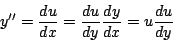
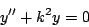
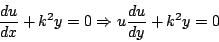
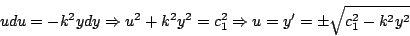
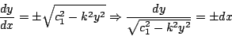
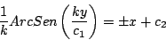
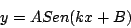

|
|
|
|
|Instituto Tecnológico de Costa Rica|Escuela de Matemática| M. Sc. Geovanni Figueroa M. |
|
|
Ausencia de la variable independiente
Si
Del mismo modo que en el caso anterior, introducimos el cambio de
variable

Esto nos permite escribir la ecuación 1.16 en la forma
Ahora encontramos la solución de la ecuación 1.17,
luego sustituimos en ésta solución
Ejemplo:

Solución
:

Separando variables e integrando

Separando variables

Integrando

Despejando

|